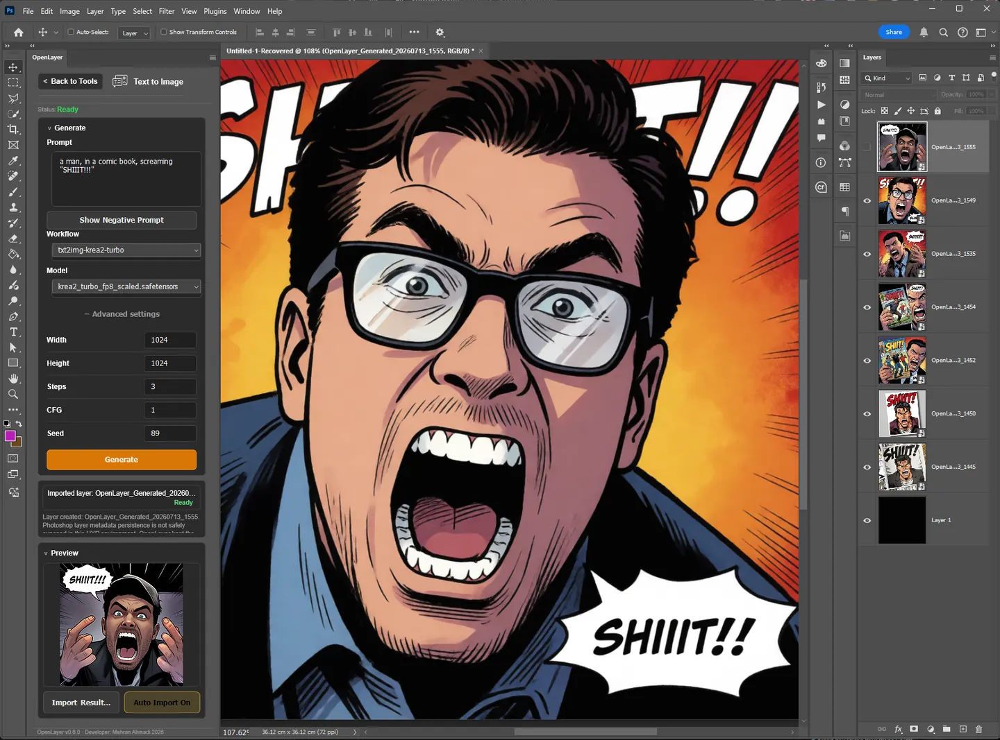
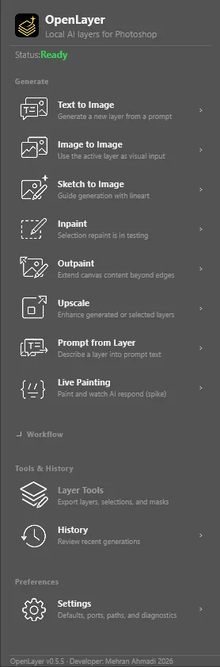
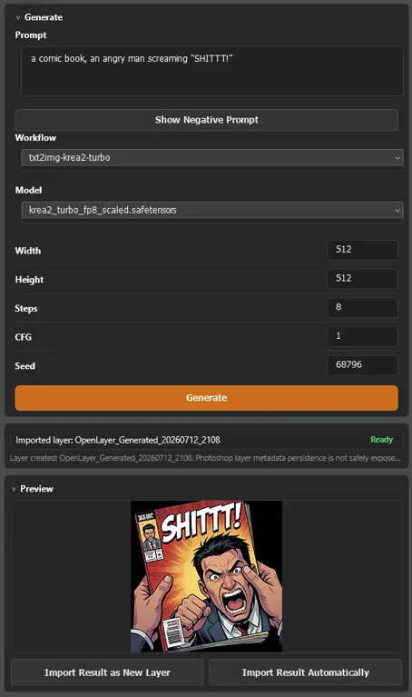
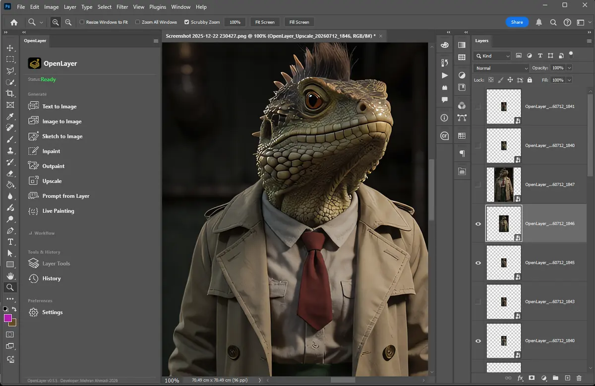
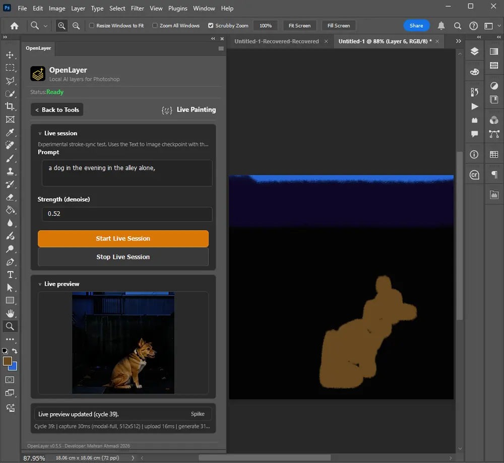
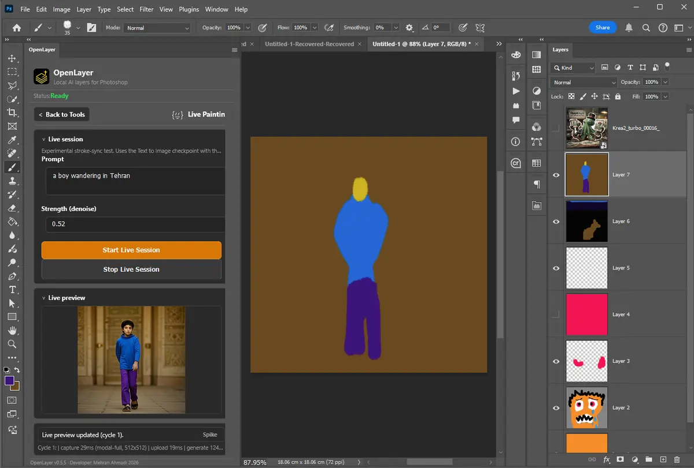
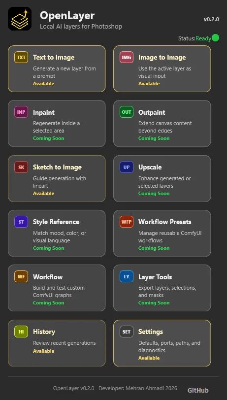
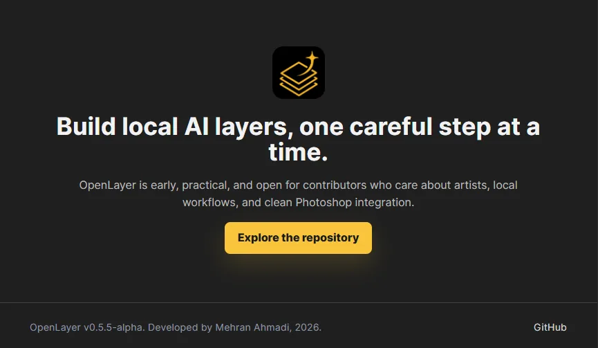
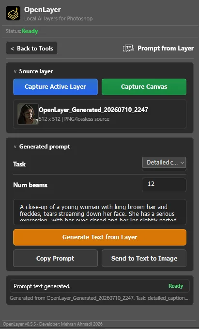
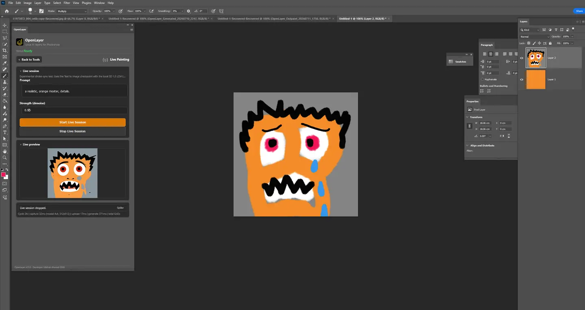

Text to Image
StablePrompt, negative prompt, size, steps, CFG, and seed into your checkpoint of choice — SD 1.x, SDXL, plus experimental Flux fp8 and Z-Image-Turbo presets.
Alpha v0.6.0 · free & open source
OpenLayer connects Photoshop to your own ComfyUI server. Generate with Stable Diffusion, SDXL, and Flux — then import results as editable layers. Your art, your GPU, your machine. No cloud. No credits. No subscription.

v0.6 artist-first interface
OpenLayer starts with dependable local workflows — text to image, image to image, sketch to image, experimental inpaint and outpaint, pixel upscale, lossless PNG source capture, live previews, diagnostics, and clean import into the active document. v0.6 adds a denser Adobe-style launcher, sticky tool headers, real generation progress, clearer availability states, and UXP-safe prompt editing without hiding the experimental edges.
Tools
Prompt, negative prompt, size, steps, CFG, and seed into your checkpoint of choice — SD 1.x, SDXL, plus experimental Flux fp8 and Z-Image-Turbo presets.
Capture the active layer or visible canvas as lossless PNG, reinterpret it with a prompt, and import the result — optionally automatically.
Guide generation with your linework through an SD 1.x LineArt ControlNet workflow, with adjustable control strength.
Make a Photoshop selection, capture source and mask, repaint just that region with SD inpainting or Flux Fill, and import aligned to your selection.
Extend content beyond the canvas edges with Flux Fill and per-edge padding and feathering control.
Enhance layers with local upscale models such as 4x-UltraSharp — fast pixel/model upscaling through ComfyUI.
Describe any layer or canvas into editable prompt text with Florence-2 PromptGen, then send it straight to Text to Image.
One click tells you which presets are ready on your ComfyUI — missing models, missing nodes, and beginner-friendly next steps.
Current build · v0.6.0
Each view below is a real local workflow, compressed for the web and loaded only when it approaches the viewport.





Oldest to newest
The visual language stayed dark, local, and Photoshop-aware. Each release removed friction while preserving the original goal: make AI output behave like editable layer work.




Workflow
Setup
npm install
npm run buildSelect the generated dist/manifest.json, click Load, then open the OpenLayer panel in Photoshop.
python main.py --listen 127.0.0.1 --port 8190 --preview-method autoCheck ComfyUI, choose a checkpoint, enter a prompt, generate, and import the result into the active document.
OpenLayer defaults to http://127.0.0.1:8190 so it can run beside other local tools that may already use port 8188. --preview-method auto enables live step previews.
Current alpha status
The compact dashboard, sticky headers, real progress track, larger prompt fields, and unavailable-tool states have passed a real Photoshop UXP smoke test.
OpenLayer v0.6.0-alpha is for local testing and feedback. It is not production-ready yet.
v0.6.0 retains the upload and alignment fixes while output quality across checkpoints continues to be validated by testers.
Flux1-dev fp8 Text to Image, Flux Fill Inpaint, and Outpaint run locally but still need careful validation and tuning.
OpenLayer keeps API and source workflow folders, but custom workflow import and automatic node mapping are not built yet.
txt2img-basic, img2img-basic, and sketch2img-linecn-basic are starter workflows, not final production presets.epicrealism_naturalSinRC1VAE.safetensors and control_v11p_sd15_lineart_fp16.safetensors.--preview-method auto.Roadmap
Text to Image, preview, import, checkpoint selection, Image to Image, Sketch LINECN, source capture, and setup documentation.
PNG capture, diagnostics, Prompt from Layer, Upscale, queue-aware Cancel, History metadata, live previews, and experimental Inpaint and Outpaint.
A denser dashboard, sticky headers, determinate progress, Advanced settings, clearer availability, and prompt fields hardened in the real Photoshop renderer.
Finish Inpaint and Outpaint alignment, strengthen workflow validation, and turn the metadata foundation into repeatable layer-level iteration.
Guided custom workflow import, ControlNet panels, LoRA browsing, batch variants, persistent AI layer metadata, and faster live-preview generation.
OpenLayer is early, practical, and open for contributors who care about artists, local workflows, and clean Photoshop integration.
Explore the repository